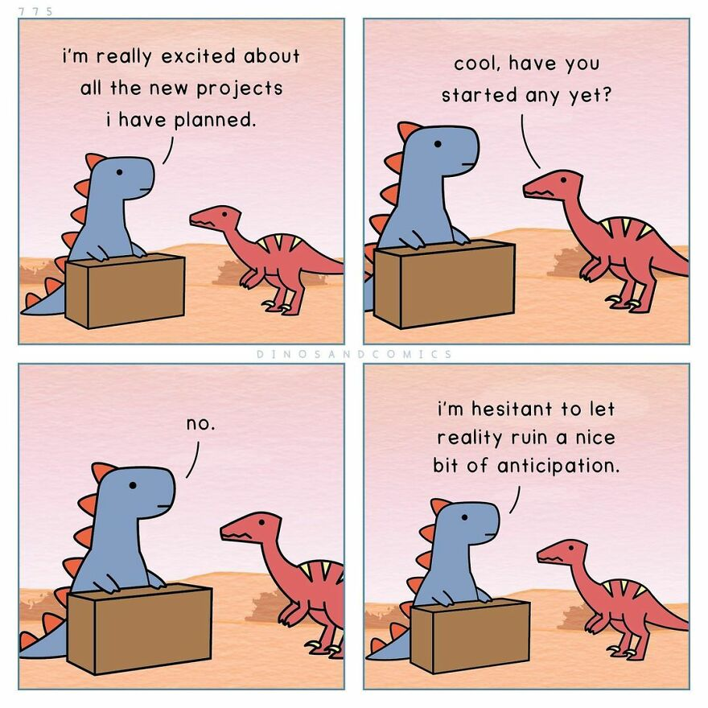

Image credit: dinosandcomics
If you have ever looked through my social media, you'll know that I rarely post anything about my life ever in public forums, so starting a blog is extremely uncharacteristic of me. I created this website as a whole for academic and vocational reasons primarily, but I have actually been thinking about blogging for a while now. My main motivations (or anti-motivations) are several-fold:
- I have a lot of internal thoughts about a wide range of topics and experiences which I would love to process, but I've never taken to journaling for extended periods of time because I've frequently felt that, while some of my thoughts do need to be processed privately, there are many that are developed enough that journaling them would just become an echo chamber. This blog will hopefully be for those ideas and revelations which are far enough in maturity to be sharable—the learnings and realizations I have had in my journey of life.
- I am not doing this blog for anyone or any audience (so don't expect posts with any regularity), but I do hope to write things that will be a blessing to other people. I have noticed that I struggle to share some of these things with people in-person, not because I am not willing to but more because (1) I don't want to bother people who don't want to listen, and (2) I've found it hard to find the right forum to have some of these conversations—some of them in quite random directions. I don't think this blog will serve as a crutch for my own social ineptness, but I will probably re-evaluate this frequently as time goes on.
- I am making this website largely for academic reasons, but I have always been more fascinated by human experience: what are the things that define us, and how do we as humans confront the metaphysical as well as the day-to-day questions that we encounter every day? My hope then is to provide a bit of a window into that through this endeavor, so that this would be more than just a website about academic achievements but more what it looks like for me to confront this world's impossible questions and conondrums as a mere speck of dust in the timeline.
I have no idea if this will be the first of many or the last of the shortest blog series to ever exist, but I trust God to use this for his name and glory, whatever that looks like.